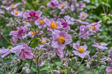

菊なのに洋風ガーデンに似合う！？

シュウメイギクは「キク」という名称がついていますが、キクの仲間ではなく、アネモネの仲間です。中国原産といわれ日本に持ち込まれたものが野生化しました。
秋明菊の名前から和風のイメージを持たれがちですが、アネモネに似た可憐な花を咲かせるため、洋風の庭にも合い、海外の人たちからも人気です。
アネモネは秋には咲かないので、アネモネに似たシュウメイギクを植えてみませんか